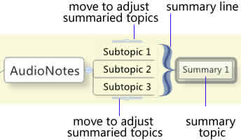

Normally, summary, a shortened version of the original, is used to highlight the major points from genuine subject and help the audience get the gist in a short period of time. Now summary is available in XMind.
You can easily add, edit, adjust and delete existed summary in XMind easily. Here's how:
To add summary:
- Select targeted topics.
-
- You can use following ways to add summary:
- Choose "Insert > Summary" on the menu.
- Use shortcut key "Ctrl+]" to add summary.
- Right-click mouse, and choose "Summary" in the context menu.
- Enter the summary content in summary topic.
- You can create the subtopics of summary topic via clicking "Tab" key.
- Move the slides at the top and bottom of summary to change the scale.

To change summary properties:
- Select a summary.
- Open the properties view.
-
You can change the following properties:
- Summary Line Style, color.
- Summary Topic Text, Line, Shape, Structure and etc.

To delete existed summary:
- Select a summary.
- Click "Delete" on the keyboard.
You may also be interested in...